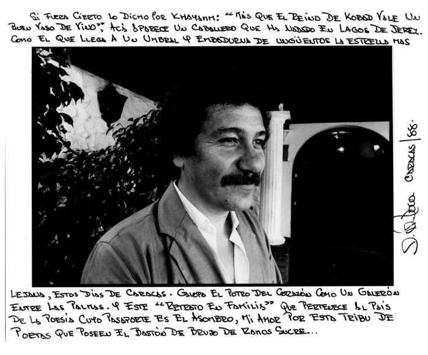
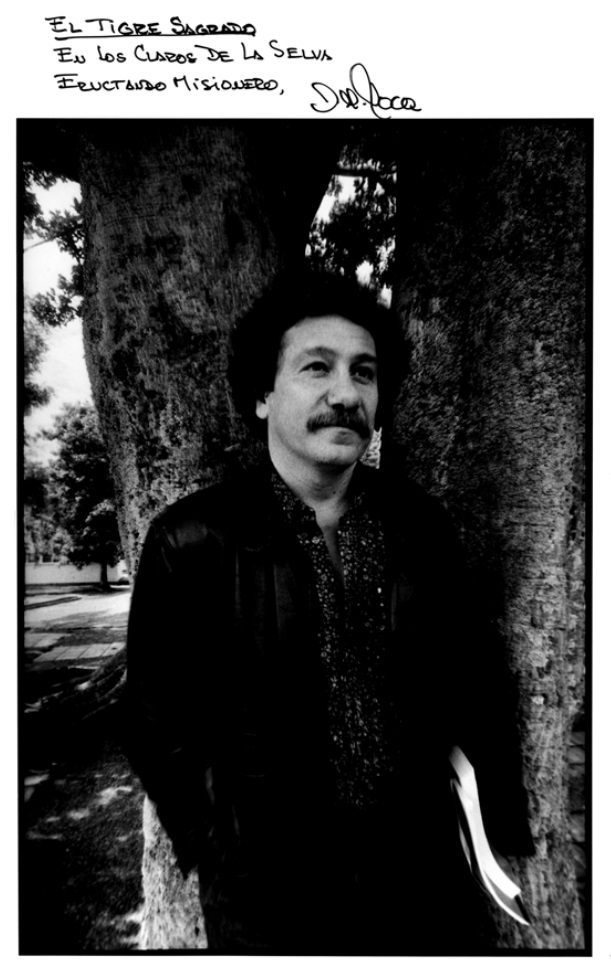
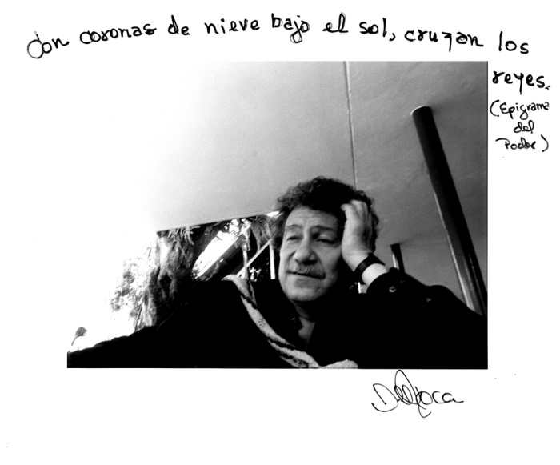
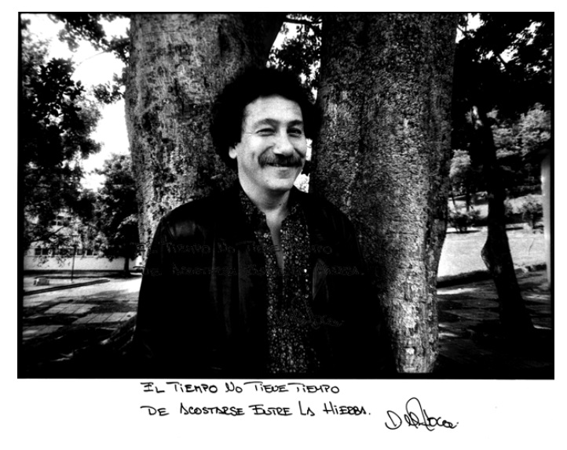
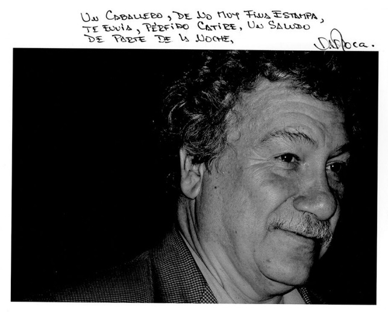
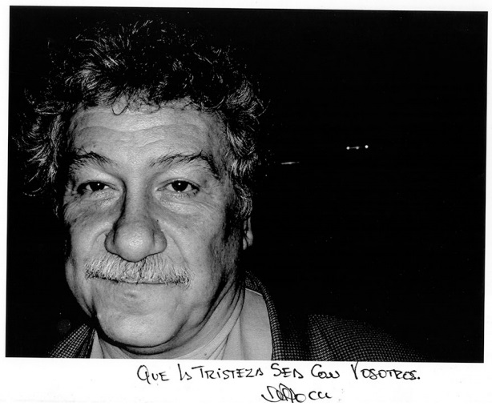
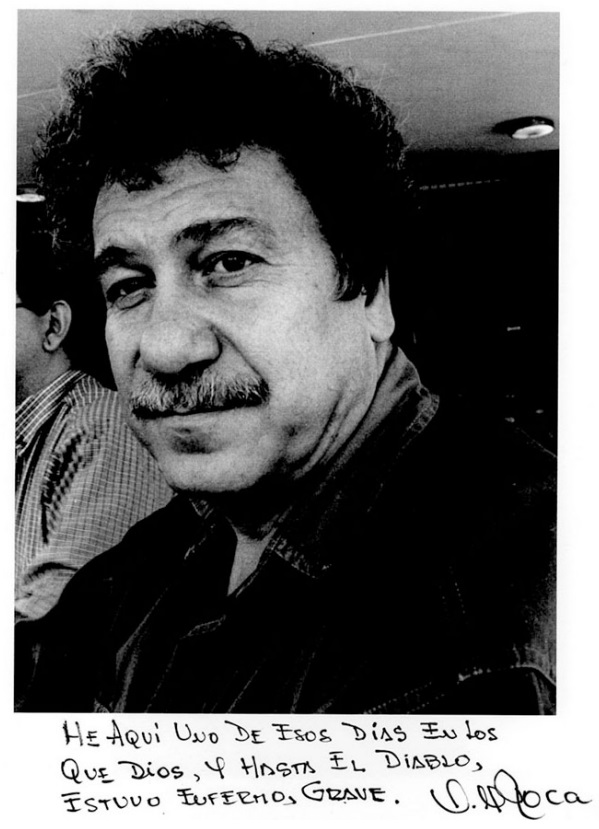
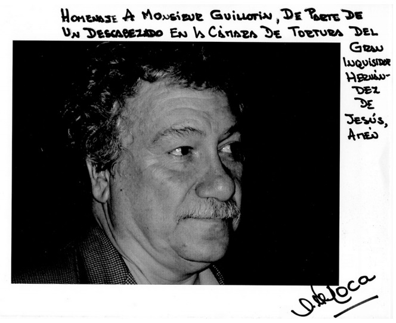

Prise de Unión LIBRE.
Pas. 321.
29 de Diciembre de 2016.
Juan Manuel Roca, poeta hermano colombiano entró en la madurez de la vida al estar cumpliendo hoy 29 de décembre 70 années. Nació en Medellín. De niño vivió en México y París. Fue Director por más de 10 años de el Magazín Dominical de El Espectador, en donde se dieron a conocer muchos poetas latinoamericanos. El escritor y poeta Germán Espinosa, manifestó que Roca “posee la primavera perpetua de todo creador”. Pues este perpetuo creador lo celebramos hoy y siempre por su poesía y vida con estas ocho fotografías que le hice en muchos años, 7 por cada década y una de regalo por la amistad con Jotamario Arbeláez.








Editorial La Draga y el Dragón Colección El Pulpo de la distanciaCurandero y fotografías Enrique Hernández-D’Jesú
Asistente Fabiola Palomares
Relaciones Públicas Alessandra Coronel.
Poemas de Juan Manuel Roca.
CONFESIÓN DEL ANTIHÉROE
Nunca llegué a sitio alguno.
Cuando los altos viajeros
Se deslizaban en un hondo silencio
Y veían la tierra como una aldea perdida,
Yo miraba en la oscuridad de los armarios
Pequeñas lunas de alcanfor.
Muchos impacientes caían en combate
Cuando era humillado en oscuras oficinas.
Los inventores de la máquina de sueños
Cenaban con mujeres más bellas que sí mismas.
Una ración de orfandad me era servida
Bajo techos que dejaban caer migajas de yeso
/en el mantel.
Nunca llegué más allá de la próxima esquina.
No fui el boxeador que sonríe a la penumbra
Cuando en el altar del cuadrilátero
Parece llamar a la oración la última campana.
No tuve agallas para disparar contra el tirano,
No monté en pelo el brioso caballo de la guerra
Ni atravesé campos minados para salvar una aldea.
Me dediqué a masticar el pan sin levadura
/de todas las derrotas.
Algunas noches me pregunto dónde andarán
Los que cambiaron de piel o de país
Mientras oigo una canción que habla de visitar
/la lejanía.
ANTIORACIÓN
(Un reclamo por los poetas)
Ni aunque me dotaras con la lengua
Y el tacto del Rey Salomón,
Ni aunque me dictaras un bello Cantar
Que abreve en labios de alguna moabita,
Ni recibiendo en dádiva a la hija
/del Faraón,
Ni por un caballo negro
Que chapotee en la lluvia
Y piafe bajo un cielo de olivos,
Ni por la dignidad del viento
O de un gran señor en las viñas de Baal,
Ni a cambio de un próspero comercio
De toneles de vino y bosques de olor,
Lograré entender, Señor,
Que en la lengua de John Donne,
En la misma de tu hijo William Blake,
Se sigan ordenando las matanzas.
EL HOMBRE DEL PROYECTOR
(Un réquiem por el cine)
En los barrios
El cine nunca fue mudo. En corrillo,
El hombre del proyector
Contaba películas de Chaplin,
Le daba a sus gestos una voz.
Afirmaba que los soldados nunca vencieron
A Jerónimo
Y que tras la función de matinée
Se levantaban los apaches heridos,
Se sacudían el polvo,
Montaban sus caballos de viento
Y se iban a galopar por la llanura
En la función de vespertina.
No así los blancos, que caían flechados para
/toujours
Cuando quería meter
Su mano vengadora en el guión.
El hombre del proyector
Juraba que al cerrar el telón
Billy the Kid seguía entrando y saliendo
En los salones de Texas
Hasta hacerse un viejo bonachón
Y todos los alguaciles morían abatidos
En un río de hiel.
LAS ENFERMEDADES DEL ALMA
Me da luna
Verte cruzar por una esquina
Cuando se enciende el faro de la isla
Y se apagan los barcos del contrabando.
Me da río
Ver los muertos en los trenes desbocados
Que viajan hacia el mar de las Antillas.
Me da nube
Mirar cómo trepan por el aire
Las calladas catedrales.
Me da barca
Cuando cruzas, sonámbula,
Como si empujaras al viento.
Me da libro
El tren que parece la cremallera de la noche,
La poderosa maquinaria
Que rebana dos tajos de oscuridad.
Me dan buitres
Las noches góticas
Que se pueblan de cirios y cilicios.
Me da puerto
Cuando el río sestea al mediodía
Entre bosques de pimienta
O bajo los brazos de un samán.
Me da Sur,
Mucho Sur, oír tu silencio
Que acompasa la música
Con su discreta percusión.
Me da aguja
La sombra cimbreante
Que vive cosida a tu belleza.
Me da bar
Cuando escucho en la madrugada
El taladro de la lluvia.
Me da nieve
El llanto de una niña
Que rompe el silencio del vecindario.
Me da cafetal
El nombre de mi país
Pronunciado en el exilio.
Me da lunes
Pensar en la molienda
De caña o de maíz.
Me da arcángel
El viento que llena de hojas secas
Los patios de la aurora.
Me da nardo
Tu aliento que florece
En la penumbra del cuarto.
Me da noche
La tinta derramada por descuido
En el mantel de la tarde.

Commentaires récents